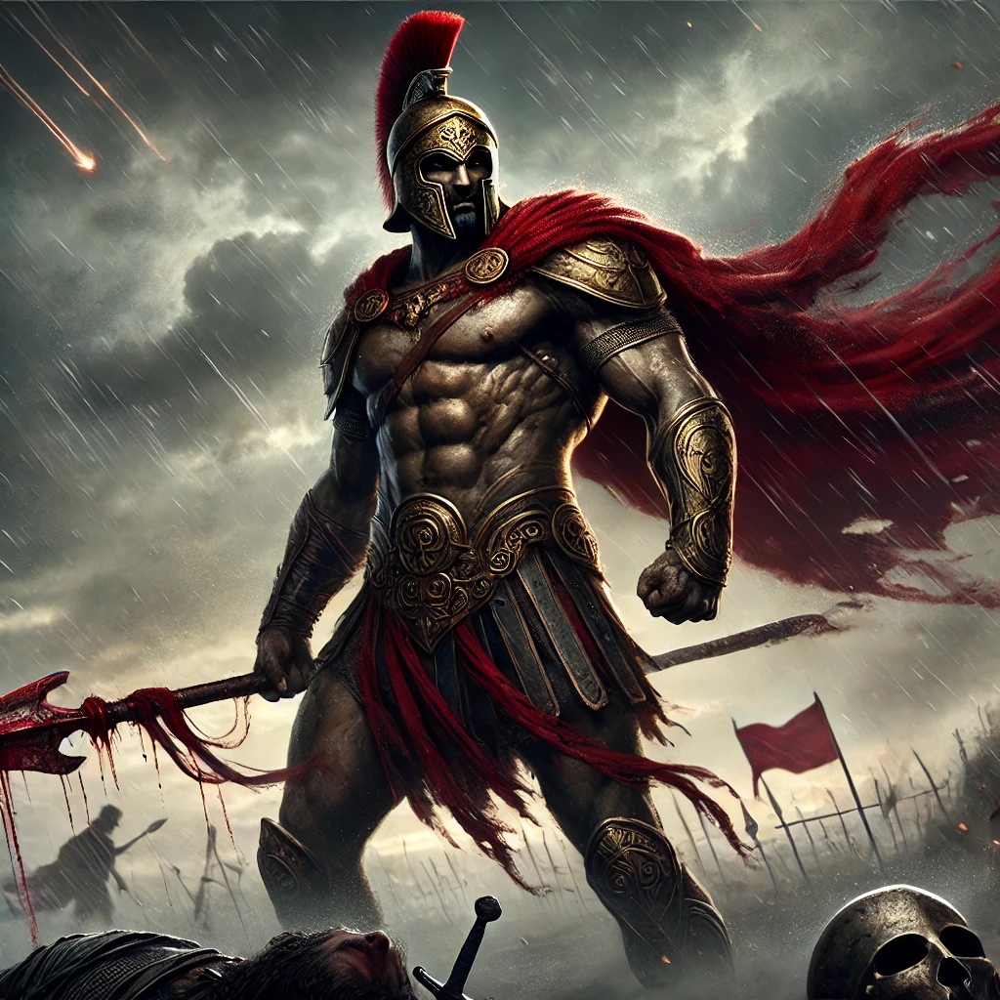
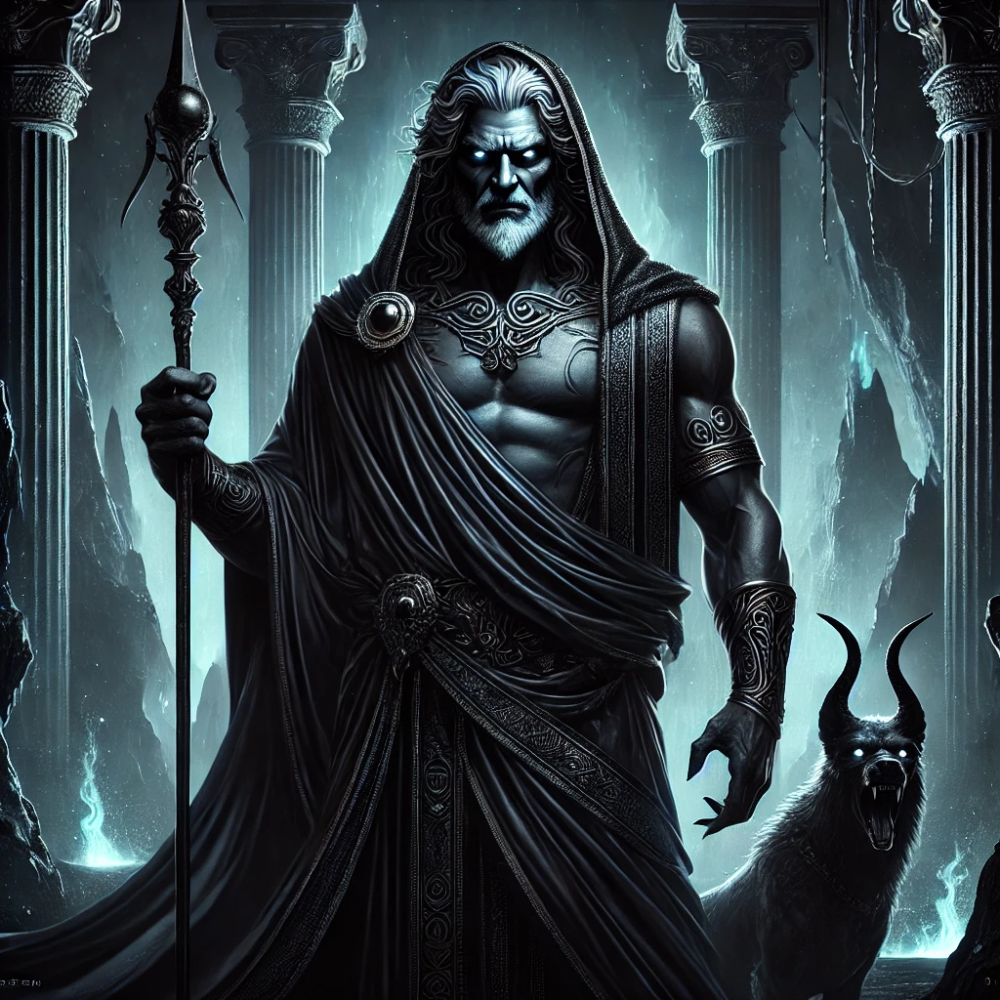

<!DOCTYPE html>
<html lang="en">
<head>
    <meta charset="UTF-8">
    <meta name="viewport" content="width=device-width, initial-scale=1.0">
    <title>Hermes - Greek Mythology with Mr. Sovocool</title>
    <style>
        body {
            font-family: Arial, sans-serif;
            margin: 0;
            padding: 0;
            background-image: url('background.webp');
            background-size: cover;
            background-attachment: fixed;
            background-position: center;
            background-repeat: no-repeat;
            color: white;
        }
        .header-banner {
            background-color: rgba(0, 0, 139, 0.8);
            width: 100%;
            text-align: center;
            padding: 20px 0;
            position: relative;
        }
        .header-banner img {
            max-width: 60%;
            height: auto;
        }
        .container {
            padding: 20px;
            background-color: rgba(0, 0, 0, 0.75);
            margin: 20px;
            border-radius: 10px;
            text-align: center;
        }
        .container h1 {
            color: yellow;
            font-size: 40px;
        }
        .container h3 {
            font-size: 22px;
            font-style: italic;
            font-weight: normal;
            color: white;
        }
        .container p {
            text-align: left;
            font-size: 20px;
            margin: 10px 0;
        }
        .container p strong {
            color: yellow;
        }
        .container p em {
            font-style: italic;
            color: white;
        }
        .god-image {
            width: 50%;
            max-width: 400px;
            border-radius: 10px;
        }
        .grid {
            display: grid;
            grid-template-columns: repeat(5, 1fr);
            gap: 20px;
            max-width: 900px;
            margin: 0 auto;
        }
        .grid a {
            text-decoration: none;
            color: white;
            font-size: 18px;
            font-weight: bold;
            display: flex;
            flex-direction: column;
            align-items: center;
            justify-content: center;
            position: relative;
            border-radius: 10px;
            overflow: hidden;
        }
        .grid img {
            width: 100%;
            height: auto;
            border-radius: 10px;
        }
        .grid span {
            position: absolute;
            bottom: 10px;
            background-color: rgba(0, 0, 0, 0.6);
            color: white;
            padding: 5px 10px;
            border-radius: 5px;
        }
    </style>
</head>
<body>
    <div class="header-banner">
        
    </div>
    <div class="container">
        <h1>Hermes</h1>
        <h3>God of Travelers, Theives, Commerce, Messengers, and Boundaries</h3>
        
        
	<p><strong>Roman Name:</strong> <em>Mercury</em></p>        
	<p><strong>Parents:</strong> <em>Zeus and Maia</em></p>
        <p><strong>Spouse(s):</strong> <em>None</em></p>
        <p><strong>Siblings:</strong> <em>Ares, Artemis, Athena, Apollo, Dionysus (half-siblings fathered by Zeus)</em></p>
        <p><strong>Children:</strong> <em>Pan, Autolycus, Hermaphroditus, and others</em></p>
        <br>
        <p>Hermes is the Greek god of travelers, thieves, merchants, and messengers. He is known for his incredible speed and clever mind. His Roman name is Mercury. Hermes is the son of Zeus, the king of the gods, and Maia, one of the Pleiades nymphs. He was born in a cave on Mount Cyllene and was known for his mischief from the moment he was born.</p> <p>One of Hermes' most famous symbols is his winged sandals, which allow him to travel quickly between the gods and mortals. He also carries a caduceus, a staff with two snakes wrapped around it, which later became a symbol of medicine. Hermes wears a winged hat and is often shown guiding souls to the underworld, as he is also the god of boundaries and transitions.</p> <p>Hermes is a trickster, known for his quick thinking and ability to talk his way out of trouble. As a newborn, he stole Apollo’s cattle but charmed his way into Apollo’s favor by inventing the lyre, a musical instrument. Zeus admired Hermes’ wit and made him the messenger of the gods. He played a key role in many myths, always using his intelligence and speed to solve problems.</p>
        <br>
      <p><strong style="color: yellow;">Notable Stories About Hermes:</strong></p>
        <ul style="text-align: left; font-size: 20px; list-style-type: none; padding-left: 40px;">
            <li><a href="#story1" style="color: white; text-decoration: underline; font-weight: normal;">Apollo's Cattle and the Invention of the Lyre</a></li>
            <li><a href="#story3" style="color: white; text-decoration: underline; font-weight: normal;">Hermes Guides Persephone from the Underworld</a></li>
            <li><a href="#story4" style="color: white; text-decoration: underline; font-weight: normal;">Hermes and Argus Panoptes</a></li>
                
        </ul>
      <br>  
      <h2 id="story1" style="color: yellow; font-weight: bold; text-align: center;">Apollo's Cattle and the Invention of the Lyre</h2>
        <p>On the day Hermes was born, he wasted no time getting into trouble. As the son of Zeus and Maia, he had a sharp mind and a mischievous spirit. While his mother slept, he crawled out of the cave where he was born and set off on an adventure.</p> <p>That night, Hermes discovered a herd of sacred cattle belonging to Apollo, the god of the sun. Wanting to prove his cleverness, he decided to steal them. To hide his tracks, he made the cattle walk backward and tied bundles of grass to his feet to erase his footprints. He led the herd to a hidden cave, where he sacrificed two of the cattle to the gods.</p> <p>On his way back home, Hermes spotted a small turtle. Inspired by its hollow shell, he had an idea. He carefully removed the shell, stretched strings made from animal gut across the opening, and plucked them to create a beautiful sound. With this, Hermes had invented the first lyre, a musical instrument unlike any other.</p> <p>The next morning, Apollo realized his cattle were missing. Using his divine sight, he tracked them to Maia’s cave, where he found only a tiny baby lying in his cradle. Maia refused to believe that her newborn son could be guilty, but Apollo knew better. He took Hermes to Mount Olympus to stand before Zeus.</p> <p>When confronted, Hermes did not deny his actions. Instead, he charmed the gods with his clever words. Amused by his young son’s wit, Zeus did not punish him harshly. However, Apollo still wanted justice. To make peace, Hermes picked up his lyre and played a soft, enchanting melody. The music was so beautiful that Apollo’s anger faded away.</p> <p>Apollo was so impressed that he accepted the lyre as a gift, making it his sacred instrument and earning him the title of the god of music. In return, he gave Hermes a golden staff, which later became the famous caduceus. From that day on, Hermes was not only known as a trickster but also as the inventor of music and the swift messenger of the gods.</p>

      <br>  
                <h2 id="story3" style="color: yellow; font-weight: bold; text-align: center;">Hermes Guides Persephone from the Underworld</h2>
        <p>Persephone, the daughter of Demeter, had been taken to the underworld by Hades, the god of the dead. Her mother, the goddess of the harvest, was heartbroken and caused the earth to wither in grief. Crops failed, and people suffered. Seeing this, Zeus decided that something had to be done. He ordered Hermes, the swift messenger of the gods, to travel to the underworld and bring Persephone back to her mother.</p> <p>Without hesitation, Hermes put on his winged sandals and flew down into the dark and shadowy realm of Hades. The underworld was silent except for the whispers of lost souls, but Hermes was not afraid. He moved swiftly past the River Styx, where Charon, the ferryman, guided the dead, and past Cerberus, the great three-headed dog, who growled but did not stop him.</p> <p>At last, Hermes arrived at the throne of Hades, where Persephone sat beside him. Delivering Zeus’s command, Hermes told Hades that Persephone must return to her mother. Hades did not argue, but he had a trick of his own. Before she left, he offered Persephone a few pomegranate seeds. Unaware of the consequences, she ate them, binding herself to the underworld forever.</p> <p>Knowing he could not break the ancient laws, Hades agreed to a compromise. Persephone would spend part of the year with her mother on the surface, bringing spring and summer, and part of the year in the underworld, bringing fall and winter. With that, Hermes gently took Persephone’s hand and led her out of the darkness.</p> <p>As they rose from the underworld, Persephone saw the bright sky for the first time in months. Flowers bloomed as they neared the earth, and Demeter, overjoyed to see her daughter, embraced her tightly. Though she knew Persephone would have to return to Hades for part of the year, she was grateful to Hermes for bringing her home. From that day forward, the seasons changed with Persephone’s journey, and Hermes was forever remembered as the kind and swift guide of souls.</p>

      <br>  
      <h2 id="story4" style="color: yellow; font-weight: bold; text-align: center;">Hermes and Argus Panoptes</h2>
        <p>Long ago, Zeus fell in love with a beautiful mortal woman named Io. Fearing the wrath of his wife, Hera, Zeus turned Io into a white cow to hide her. However, Hera saw through the trick and demanded that Zeus give her the cow as a gift. Zeus had no choice but to agree, and Hera placed Io under the watchful eye of Argus Panoptes, a giant with a hundred eyes who never all closed at once.</p> <p>Io was now a prisoner, unable to escape while Argus stood guard. Wanting to free her, Zeus sent Hermes, the clever and swift messenger of the gods, to outwit Argus and set Io free. Wearing his winged sandals, Hermes flew down to the meadow where Argus kept watch. Instead of using force, Hermes relied on his greatest skill—his cunning words and music.</p> <p>Hermes approached Argus in the form of a simple shepherd and began to play a tune on his flute. The melody was soft and soothing, and Argus, curious, listened. As Hermes played, he told long, winding stories, each one more peaceful than the last. Slowly, one by one, Argus’s many eyes began to close. The more Hermes spoke, the heavier Argus’s eyelids became, until at last, every single one had shut in sleep.</p> <p>Seeing his chance, Hermes swiftly took his sword and struck down Argus, freeing Io from her captivity. When Hera discovered what had happened, she was furious. To honor her loyal servant, she took Argus’s many eyes and placed them on the feathers of her sacred bird, the peacock, which still carries his watchful gaze to this day.</p> <p>Though Hermes had won the day, Hera was not finished. She sent a gadfly to torment Io, chasing her across the world until she finally found peace. But thanks to Hermes’s cleverness and skill, she was no longer trapped under Argus’s unblinking stare.</p>
              <br>
    </div>
<br>
        <p style="text-align: center; font-weight: bold;">Click on an image below to learn more about the Olympians:</p>
        <div class="grid">
            <a href="index.html"><span>Home</span></a>
	    <a href="zeus.html"><span>Zeus</span></a>
            <a href="hera.html"><span>Hera</span></a>
            <a href="poseidon.html"><span>Poseidon</span></a>
            <a href="demeter.html"><span>Demeter</span></a>
            <a href="athena.html"><span>Athena</span></a>
            <a href="apollo.html"><span>Apollo</span></a>
            <a href="artemis.html"><span>Artemis</span></a>
            <a href="ares.html"><span>Ares</span></a>
            <a href="aphrodite.html"><span>Aphrodite</span></a>
            <a href="hephaestus.html"><span>Hephaestus</span></a>
            <a href="dionysus.html"><span>Dionysus</span></a>
            <a href="hades.html"><span>Hades</span></a>
            <a href="hestia.html"><span>Hestia</span></a>
        </div>
		<br><br>
    <p class="copyright" style="text-align: center;">&copy; 2025 Stephen Sovocool</p>
    </div>
</body>
</html>
